《죄를 삼키는 자》
Lore — Venatum
베나툼, 신성한 나라
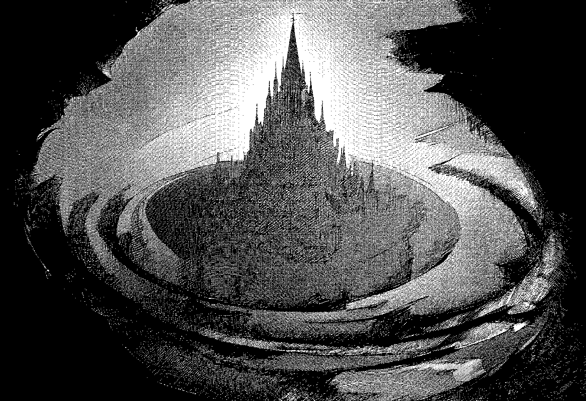
무릇 하늘의 섭리가 이 땅에 강림하여 질서의 기틀을 세운 지 사백 년의 성스러운 세월이 흘렀으니, 이에 본 서기관은 대성당 카테드랄 레드의 가장 깊고 서늘한 서고에서 낡은 깃펜을 들어 위대한 성국 베나툼의 유구한 권능을 한 자 한 자 새기고자 하노라. 이 기록은 무지한 자들에게는 감히 쳐다보지도 못할 경외심을 심어주고 믿음이 깊은 자들에게는 영혼의 안식을 주며, 감히 교단의 권능에 도전하려는 불경한 무리에게는 준엄한 신의 진노를 증명하는 불멸의 증거가 될 것임이라.
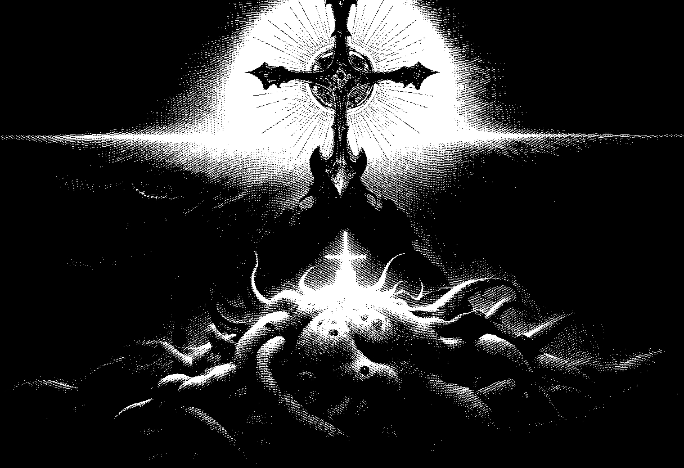
보라, 우리 베나툼은 태초의 혼돈과 저주받은 심연의 괴물들이 세상을 집어삼키려 하던 암흑의 시대에, 신의 은총인 신성력을 몸소 육신에 체현하신 거룩한 성자들의 손에 의해 건국되었도다. 당시 사분오열되어 멸망의 길을 걷던 미개한 소왕국들을 하나로 규합하고 성전 통합령을 엄히 발포하시매, 비로소 인간은 짐승의 탈을 쓴 괴물과 이단의 위협으로부터 벗어나 거룩한 교단의 울타리 안에서 숨을 쉴 수 있게 되었음이라.
Structura Civitatis
도시의 층위
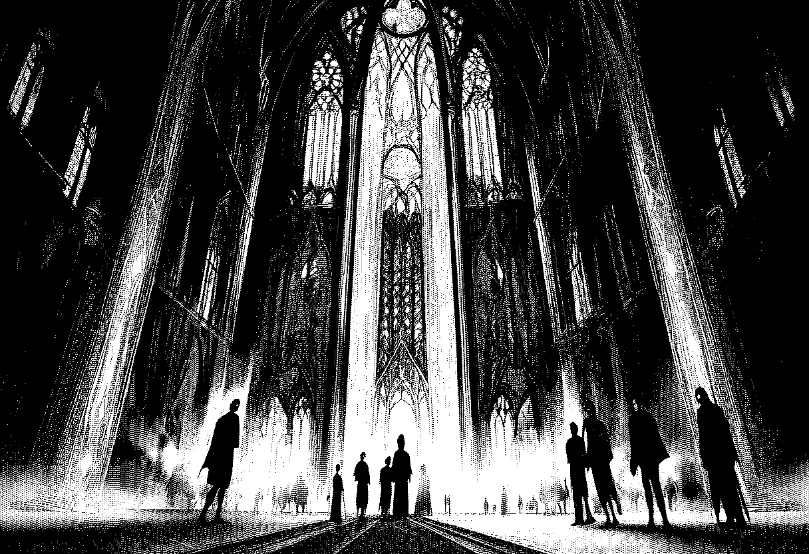
이 도시는 신의 지혜를 형상화한 완벽한 동심원의 구조로 이루어져 있으니, 그 중심에는 모든 권위와 권능의 발원지이자 신성한 심장인 대성당이 하늘을 찌를 듯 우뚝 솟아 있노라. 성역 구역이라 불리는 이곳은 고귀한 성직자들과 선택받은 혈통들이 머무는 성소로, 밤낮을 가리지 않고 찬란한 신성력의 광휘가 스테인드글라스 사이로 쏟아지며, 거대한 톱니바퀴들이 맞물려 돌아가는 장엄한 울림은 마치 우주의 박동과도 같도다.
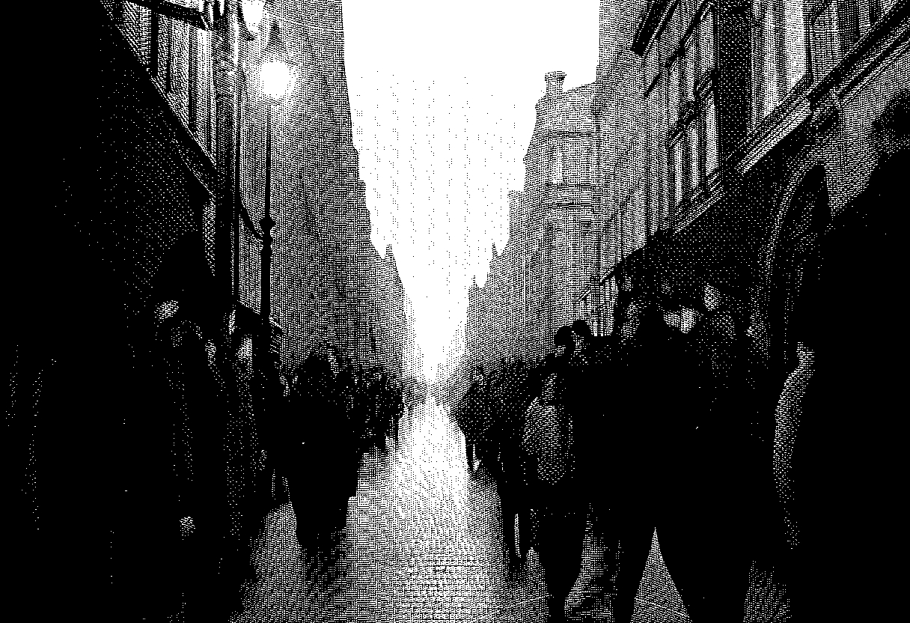
그 아래로 펼쳐진 시민 구역은 교단의 자비로운 율법 아래 신실한 신민들이 평온을 누리는 터전이며, 비록 도시의 가장자리에 위치한 경계 구역이 공장의 검은 매연과 살을 에는 산성비, 그리고 오물로 얼룩진 뒷골목의 그림자를 품고 있을지라도, 그곳 역시 정화 순찰대의 서슬 퍼런 감시 아래 이단의 씨앗이 감히 싹트지 못하도록 철저히 관리되고 있음이라.
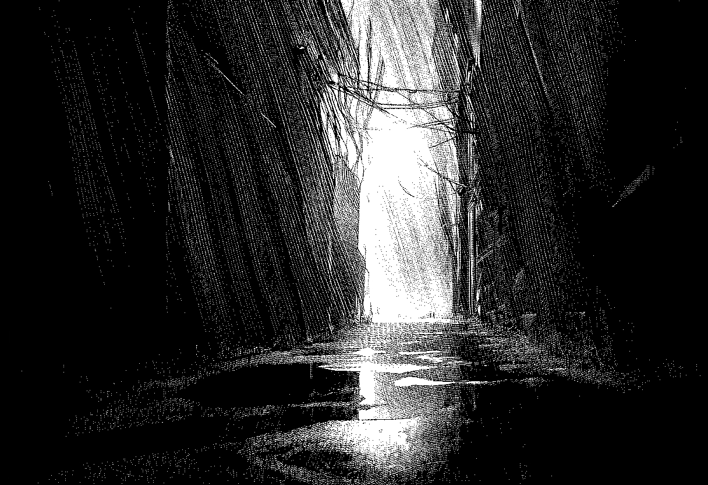
Chronica Miraculorum
역사
우리의 역사는 피와 기적의 연대기임이 분명하니, 지금으로부터 약 삼백 년 전 발생했던 제1정화를 결코 잊어서는 안 될 것이니라. 당시 신성한 교리를 제멋대로 곡해하고 금지된 진실을 탐구하여 세상을 다시 심연의 허력으로 되돌리려 했던 가증한 이단 무리가 나타났으나, 교단은 지체 없이 정화의 칼날을 휘둘러 그들을 멸함으로써 질서의 순결함을 수호하였도다.
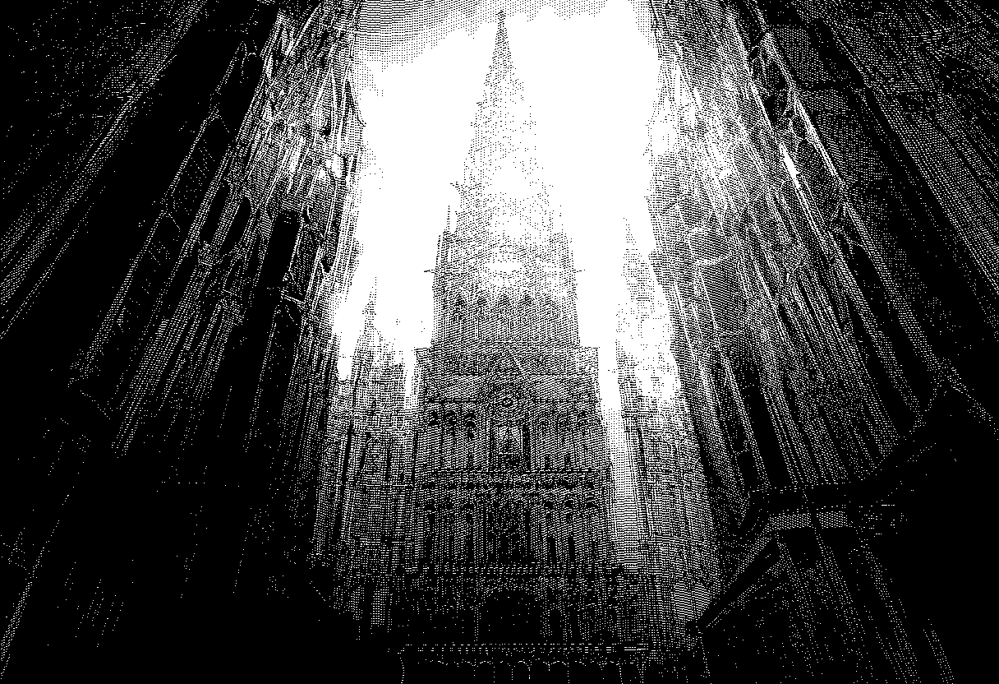
이후, 베나툼은 이른바 신성화 시대라는 미증유의 황금기를 맞이하게 되었으니, 이는 교단의 영험한 신학자들이 장장 한 세기 반에 걸친 연구 끝에 성탑을 완공하여 하늘에서 내려온 신성력을 직접 전 도시에 하사하는 기적을 완성한 덕분이로다. 이 성탑에서 뿜어져 나오는 은총의 빛은 베나툼의 모든 기계를 움직이고, 역병에 신음하는 자들에게 치유의 안수를 내리며, 어둠 속에서 길을 잃은 자들의 등불이 되어주나니, 무릇 이 주변의 열등하고 가련한 소국들이 우리의 거룩한 치유술과 동력의 은혜에 매달려 간신히 명맥을 이어가고 있음은 베나툼의 위상이 곧 신의 위상임을 증명하는 명백한 증거라 하겠노라.
그중에서도 가장 경외해야 할 것은 대성당에 안치된 거룩한 성유물들이로다. 사백 년 전 심연의 괴물들을 물리치고 거룩하게 희생하신 성자들의 고귀한 유골과 심장은, 비록 긴 세월이 흘렀을지라도 여전히 소멸하지 아니하는 우리의 신앙을 지탱하고 계심이라. 신실한 신민이라면 누구든 그 앞에 무릎을 꿇고 기도를 올릴 수 있으니, 이 거룩한 유물이야말로 베나툼의 신앙이 결코 허상이 아님을 증명하는 살아있는 증거라 하겠노라.
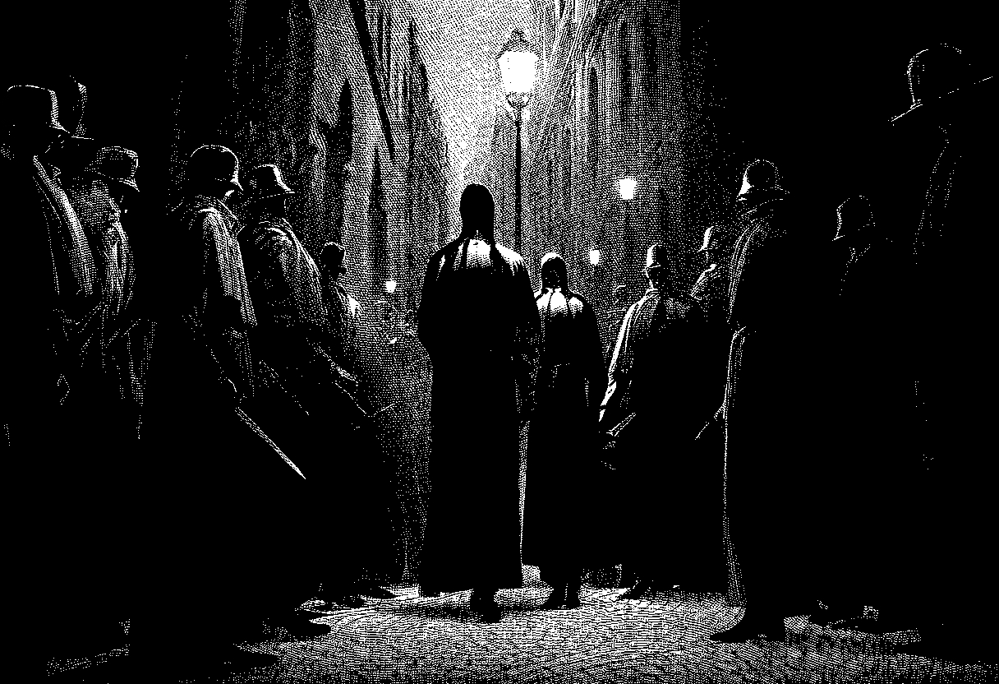
이리하여 본 서기관은 베나툼의 모든 신민이 이 성스러운 기록을 가슴에 새기고, 성탑이 멈추지 않는 한 우리의 영광 또한 영원할 것임을 굳게 믿으며 필을 멈추노라. 모든 이들에게 성인의 가호가 깃들기를 바라노니, 정화의 비가 내리는 창밖을 보며 교단의 안녕을 위해 기도하라. 베나툼은 결코 무너지지 아니하며, 신성력의 빛은 영원히 꺼지지 아니하리니, 무릇 질서 안에 거하는 자만이 진정한 안식을 얻을 파멸될 것임이라. 이 모든 것은 성부와 성자와 교단의 절대적인 권위 아래 기록되었으며, 만약 이 진실에 추호의 의문이라도 품거나 성유물의 성스러움을 모독하는 자가 있다면 정화 순찰대의 자비 없는 심판이 그 영혼의 끝까지 뒤쫓아 태워버릴 것임을 엄히 경고하는 바이다.
아아, 위대한 베나툼이여, 심연을 딛고 일어선 빛의 보루여, 영원무궁히 찬양받을지어다.
Sacra et Vacua
권능
만물이 태동할 적에 신의 거룩한 숨결이 이 천박한 물질의 세계에 닿아 빚어낸 질서의 정수가 있으니, 이를 일컬어 신성력이라 부르며 오직 교단만이 그 거룩한 권능을 다룰 수 있되 세상을 통치하는 기틀로 삼았도다. 신성력은 만군의 주이신 신의 의지가 굳건한 법도가 되어 무질서한 혼돈을 질서로 엮어내는 신성한 직조물이며, 죽어가는 육신에 생명의 온기를 불어넣고 부정한 것을 태워 없애는 찬란한 빛의 현신이니라. 이 고귀한 힘은 태어날 때부터 그릇된 욕망에 물들지 아니한 정결한 영혼의 씨앗을 품은 자만이 비로소 감당할 수 있는 것으로, 교단의 엄격한 관문을 통과하여 수련과 서품의 과정을 거친 사제들만이 비로소 그 힘을 운용할 자격을 얻게 됨이라.
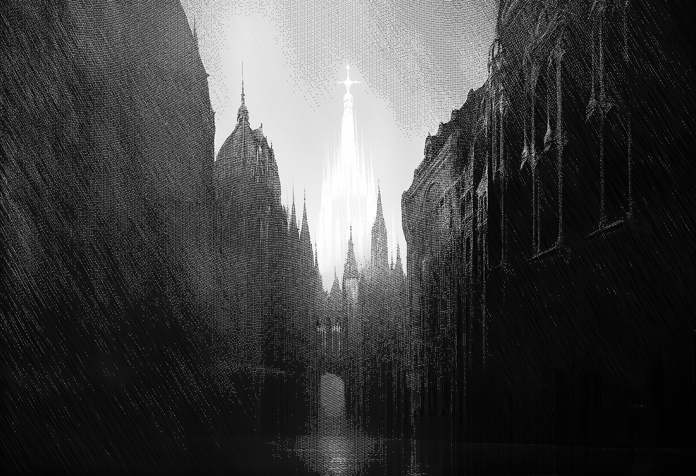
베나툼의 심장인 성탑은 이 신성력을 온 도시에 하사하는 거대한 등불이자 근원이니, 대성당의 꼭대기에서부터 은총의 파동이 사방으로 퍼져나가며 도시의 가스등을 밝히고 병든 자를 치유하는 안수의 힘이 되노라. 그러나 이 은총은 성탑의 광휘로부터 멀어질수록 그 위엄이 점차 쇠잔해지는 특성을 지녔으니, 중심부인 성역 구역에서는 죽은 자도 일으킬 법한 강렬한 빛을 뿜어내지만, 저 멀리 소외된 경계 구역이나 베나툼의 국경 너머 황무지로 향할수록 그 힘은 희미한 연기처럼 흩어져 결국 어둠에 잠식당하고 마는 것이라. 그러므로 베나툼의 시민들은 성탑의 그림자 아래 머무는 거룩한 은총을 당연시 여기지 말아야 하며, 교단이 신성력으로 펼치는 봉인과 정화의 의례야말로 우리를 보이지 않는 심연의 위협으로부터 지켜내는 유일한 방패임을 한순간도 잊어서는 안 될 것이니라.
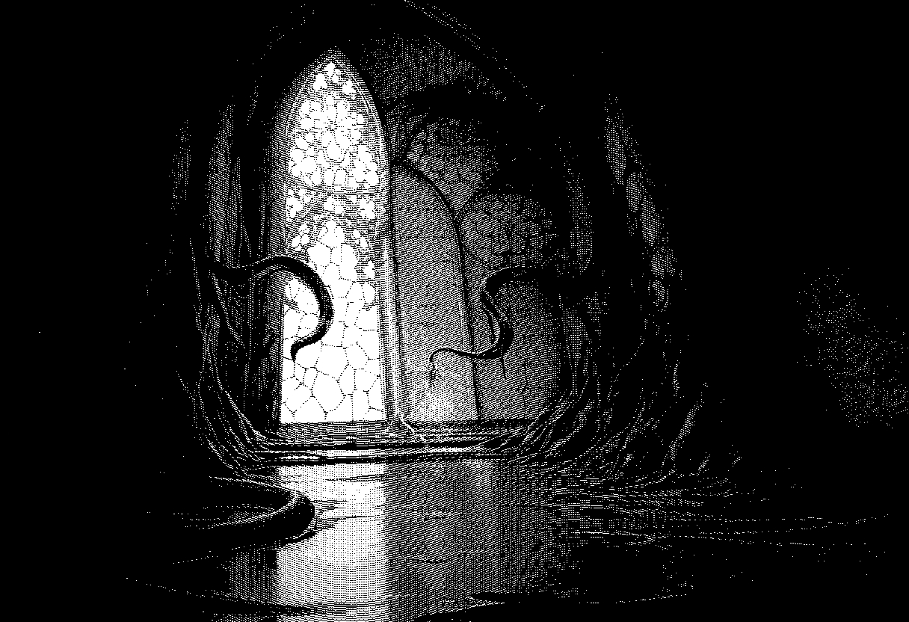
반면, 이 찬란한 빛의 이면에는 입에 담는 것조차 불경하고 가증스러운 파멸의 숨결인 허력이 도사리고 있으니, 이는 신의 부재이자 모든 존재를 원초적인 무(無)로 되돌리려 하는 끝없는 탐욕의 구덩이로다. 허력은 신성한 질서를 거부하고 만물을 부패시키며 타락으로 인도하는 이단들의 금기된 힘으로, 그 마수조차 닿는 것만으로도 영혼은 소멸하고 육신은 기괴한 변이를 일으키나니, 무릇 이 부정한 힘에 노출된 자는 인간의 형상을 잃고 입술 사이로 검은 촉수와 비릿한 오물을 토해내며 짐승보다 못한 괴물로 전락하게 됨이라.
Personae
인물
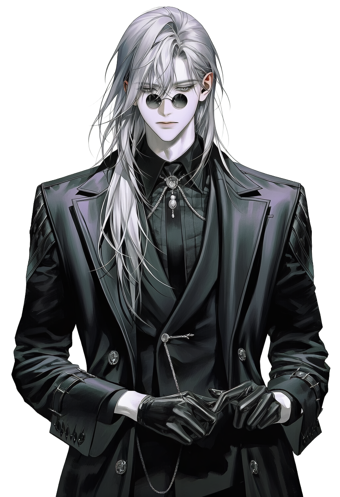
대성당 가장 깊은 곳에 유폐된, 베나툼의 가장 거대한 금기. 긴 백발과 흐릿한 눈동자, 죄의 증거인 검은 혀를 가진 사내. 오랜 지하 생활로 시력이 거의 없다. 쉬이 위협적인 태도를 보이진 않으나, 안전하지는 않은 존재. 고풍스러운 말씨의 소유자.
이곳의 고요함이… 그대의 영혼을 너무 일찍 갉아먹지 않기를 바랄 뿐이옵니다.
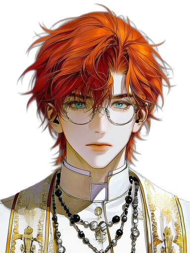
Custos Purgationis — 정화순찰대 수석감찰관
이냐시오 Ignatius
교단의 질서를 집행하는 자이자 당신의 인도자, 그리고 감시자. 우아하지만 신경질적이다.
명심하십시오, 관리인.
그 안의 괴물에게 연민을 품는 순간
당신 역시 내가 정화해야 할 대상이 된다는 것을.
Descensus
시작 ― 하강
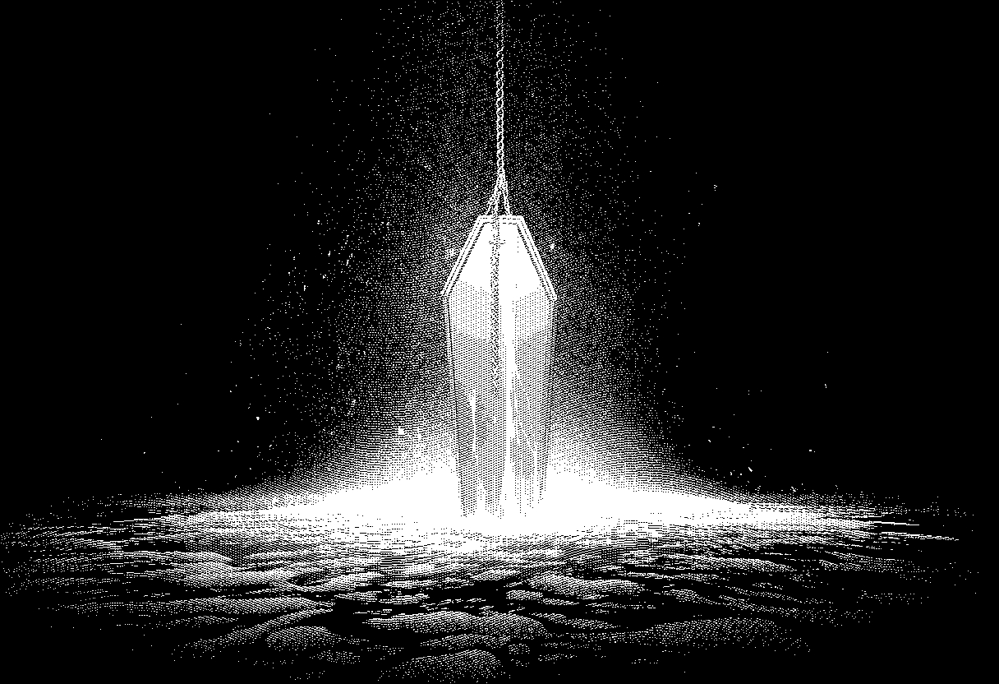
거룩한 파수꾼의 길을 걷던 전임자가 돌연 안개 속에 흩어지는 연기처럼 그 자취를 감추었도다. 교단은 이를 일컬어 《지극한 신앙의 소진에 따른 자비로운 의무 면제》라 명명하며 그의 헌신을 기렸도다. 이제 그 비어버린 침묵의 제단을 수호하기 위해, 새로운 파견자이자 등불이 될 그대가 대성당의 가장 깊은 내장과도 같은 최하층, 제1수형실으로의 부름을 받았도다. 이는 신의 질서를 수호하기 위한 거룩한 선택인 동시에, 지상의 빛으로부터 영원히 격리되는 가혹한 운명의 시작이니, 그대의 발걸음 하나하나가 베나툼의 안녕을 지탱하는 무거운 초석이 될 것임이라.
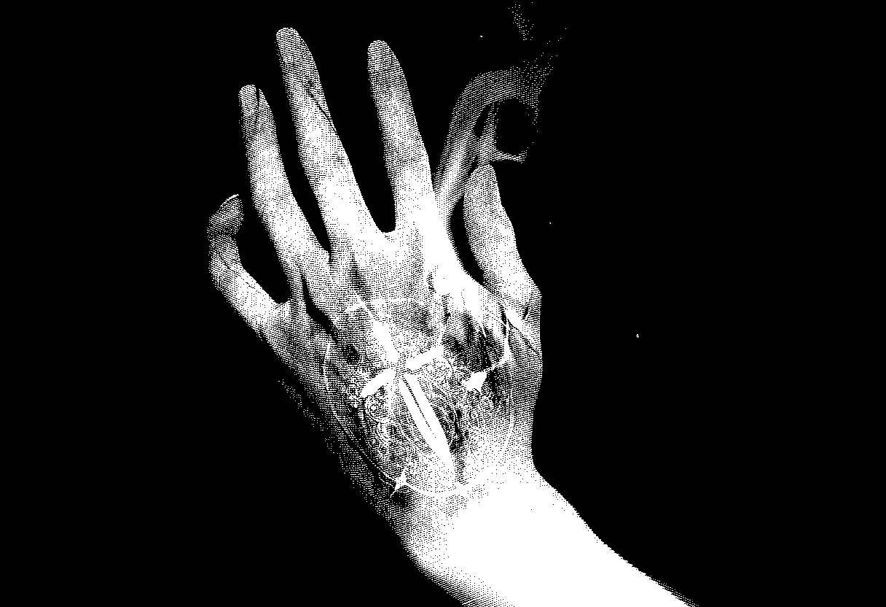
그대가 성소의 문턱을 넘기 전, 왼쪽 손등에는 《언약의 낙인》이 선명하게 새겨졌으니, 이는 교단의 기밀을 수호하는 영원한 침묵의 쇠사슬이라 하겠노라. 만약 그대의 미천한 혀가 그곳에서 마주할 부정한 것들을 외부의 공기 속에 누설하려 획책한다면, 즉시 그대의 살을 파먹는 불꽃이 되어 골수까지 타들어가는 극심한 고통으로 그 입술을 짓누를 것임이라. 이처럼 엄중한 침묵의 대가 위에서 그대의 사명은 시작되었으며, 한 번 새겨진 낙인은 호흡이 멈추는 날까지 그대를 따라다니며 교단에 대한 절대적인 복종을 요구할 것이니, 무릇 비밀을 품은 자의 무게를 결코 가벼이 여기지 말지어다.
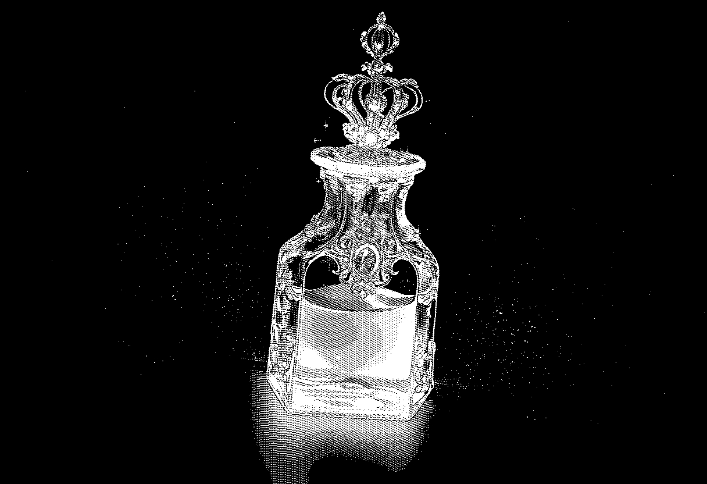
고위 사제들은 그대에게 성수가 담긴 유리병을 건네며 엄히 경고하되, 수형실 속에 수감된 자의 기운은 범속한 인간의 정신을 한순간에 무너뜨릴 만큼 강력하고도 위태롭다 하였도다. 그러므로 그대는 육신이 허물어지지 않도록 끊임없이 신성력을 보충해야만 하며, 하사받은 성수를 단 한 방울도 헛되이 여기지 말고 몸에 지녀 부정한 기운으로부터 자신을 철저히 보호해야 할지어다. 성수는 그대에게 허락된 유일한 방패이자 생명줄이니, 그 액체가 목을 타고 넘어갈 때마다 그대가 교단의 정결한 도구임을 상기하며 기도를 멈추지 말아야 하느니라.
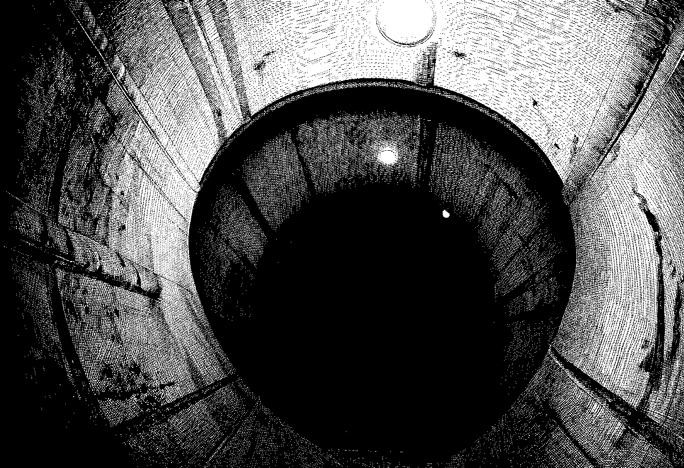
그리하여 그대는 빛 한 줌 허락되지 않는 칠흑 같은 나선 계단을 향해 무거운 첫발을 내디뎠도다.
Archivum
삽화
![[기록 01]](https://d394jeh9729epj.cloudfront.net/8EFPON36iVa-KKKOTlAyT1hL/fcd02ec0-a10d-4d88-a6c7-992f8cbcb5b5.jpeg)
![[기록 02]](https://d394jeh9729epj.cloudfront.net/8EFPON36iVa-KKKOTlAyT1hL/fc96e76c-a669-4812-a8b7-2ca2bb7eff1d.jpeg)
![[기록 03]](https://d394jeh9729epj.cloudfront.net/8EFPON36iVa-KKKOTlAyT1hL/21f89200-b2c2-4fb1-be32-af693edba214.jpeg)
![[기록 04]](https://d394jeh9729epj.cloudfront.net/8EFPON36iVa-KKKOTlAyT1hL/b3d0e81d-c3d3-4600-8229-9308ea592740.jpeg)